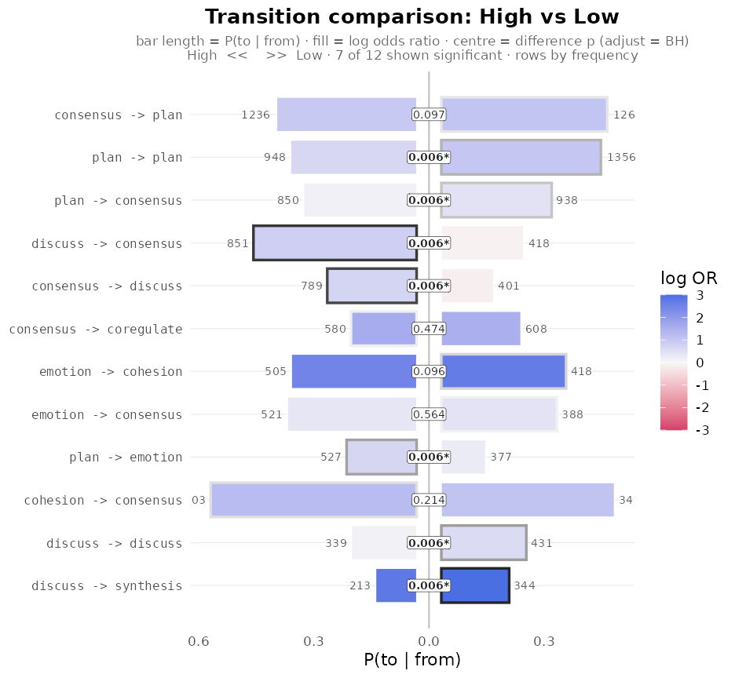

Comparing groups
Written by Mohammed Saqr and Sonsoles López-Pernas
Source:vignettes/group-comparison.Rmd
group-comparison.RmdGroups of learners, conditions, or courses can differ in the order of their actions: one group may move from discussion to consensus where another moves from discussion to planning. A lag sequential model fitted to each group describes its transitions, but two models estimated separately almost always look different, if only because of sampling variation. The question a group comparison answers is whether a difference in a transition, or in the transition structure as a whole, is larger than would arise if group membership carried no information about the sequences.
lagdynamics answers it in two steps.
lsa(data, group = ) fits one model per group in a shared
state space, so the groups can be compared cell by cell even when one
group never visits a state. compare_lsa() then tests the
differences by permuting group labels over whole sequences, and
bayes_compare_lsa() gives the Bayesian counterpart, a
credible interval for each difference in transition probability.
Data
group_regulation_long is a long event log of
collaborative regulation actions, one row per action: 27,533 actions.
Two achievement groups contribute about equally: 13,721 actions from
high achievers and 13,812 from low achievers.
-
Actor:
Actoridentifies the person whose actions form one sequence. -
Action:
Action, the coded regulation action (9 states:adapt,cohesion,consensus,coregulate,discuss,emotion,monitor,plan,synthesis). -
Time:
Time, the timestamp that orders the actions; a gap of more than 900 seconds (the defaulttime_threshold) starts a new sequence. -
Group:
Achiever,HighorLow.
Group and Course are further metadata and
are not used here.
library(lagdynamics)
head(group_regulation_long)
#> Actor Achiever Group Course Time Action
#> 1 1 High 1 A 2025-01-01 08:27:07 cohesion
#> 2 1 High 1 A 2025-01-01 08:35:20 consensus
#> 3 1 High 1 A 2025-01-01 08:42:18 discuss
#> 4 1 High 1 A 2025-01-01 08:50:00 synthesis
#> 5 1 High 1 A 2025-01-01 08:52:25 adapt
#> 6 1 High 1 A 2025-01-01 08:57:31 consensusOne model per group
Naming the grouping column in group fits one model per
group under the same state labels, engine, and lag.
gfit <- lsa(group_regulation_long, actor = "Actor", action = "Action",
time = "Time", group = "Achiever")
gfit
#> <lsa_group>
#> engine: classical
#> states: 9 (adapt, cohesion, consensus, coregulate, discuss, emotion, monitor, plan, synthesis)
#> groups: 2
#> - High: 1000 sequences
#> - Low: 1000 sequencesThe log yields 1000 sequences in each group over the same 9 states, so the two models have the same cells and can be compared one transition at a time.
summary() of a grouped fit is a data frame with one row
per group.
summary(gfit)
#> group engine lag n_states n_sequences n_events n_transitions n_significant alpha
#> 1 High classical 1 9 1000 13721 12721 66 0.05
#> 2 Low classical 1 9 1000 13812 12812 67 0.05
#> lrx2 lrx2_df lrx2_p x2 x2_df x2_p
#> 1 6147 64 0 6807 64 0
#> 2 7715 64 0 9197 64 0The two groups are of nearly equal size: 12,721 transitions among high achievers and 12,812 among low achievers. Both reject independence decisively ( and on 64 degrees of freedom), and both have most of their 81 transitions significant (66 and 67). Each group therefore has a strongly ordered process, and the comparison asks whether the order is the same.
The reading verbs work on the grouped fit and return a leading
group column. The strongest significant transitions of both
groups:
transitions(gfit, significant = TRUE, sort = "strength") |> head(8)
#> group from to lag count expected prob prob_col adj_res p yules_q
#> 1 High emotion cohesion 1 505 114.05 0.3258 0.53953 40.6 0.00e+00 0.847
#> 2 High consensus consensus 1 283 916.99 0.0834 0.08229 -28.6 3.68e-180 -0.698
#> 3 High discuss synthesis 1 213 46.13 0.1063 0.72696 27.1 1.79e-161 0.881
#> 4 High discuss plan 1 25 458.83 0.0125 0.00858 -25.1 2.35e-139 -0.934
#> 5 High consensus coregulate 1 580 254.38 0.1710 0.60797 24.8 1.21e-135 0.663
#> 6 High consensus plan 1 1236 777.01 0.3644 0.42416 21.9 2.64e-106 0.447
#> 7 High synthesis adapt 1 40 3.13 0.1439 0.27972 21.2 7.61e-100 0.905
#> 8 High cohesion consensus 1 503 253.58 0.5362 0.14626 19.1 6.28e-81 0.554
#> kappa kappa_z kappa_p lift sign significant
#> 1 0.425 37.7 6.36e-311 4.4280 over TRUE
#> 2 -0.709 -30.1 5.36e-199 0.3086 under TRUE
#> 3 0.613 25.5 5.39e-143 4.6169 over TRUE
#> 4 -0.949 -26.0 3.81e-149 0.0545 under TRUE
#> 5 0.462 24.6 9.79e-134 2.2801 over TRUE
#> 6 0.180 19.0 3.49e-80 1.5907 over TRUE
#> 7 0.241 19.6 1.08e-85 12.7997 over TRUE
#> 8 0.311 17.1 1.27e-65 1.9836 over TRUESorting applies within each group, so the first rows are those of the
high achievers; the low achievers’ rows follow in the full table. Among
high achievers, emotion -> cohesion is the strongest
regularity (505 observed against 114 expected, z = 40.6, Q = 0.847),
discuss -> synthesis follows (z = 27.1), and repeating
consensus is strongly avoided (z = -28.6). Each group’s
table describes its own process; whether a transition differs between
the groups is a separate test.
A permutation test of group differences
compare_lsa() shuffles the group labels of whole
sequences, refits both models, and sets each observed difference against
the differences produced by the shuffles. Permuting whole sequences
keeps the dependence between the actions of one sequence, so only the
link between group and transition structure is tested. The compared
measure is by default the log odds ratio of each transition against all
other transitions, which does not grow with the number of transitions
observed; diff is the high-achiever value minus the
low-achiever value. Transitions with a combined count below
min_count (default 5) are left untested. The call below
draws 500 permutations, so the smallest attainable p-value is 1/501, and
adjust = "BH" corrects the per-transition p-values for
multiple comparisons with the Benjamini-Hochberg procedure. The seed is
set once, before the permutations.
set.seed(2026)
cmp <- compare_lsa(gfit, R = 500, adjust = "BH")
cmp
#> <lsa_comparison>
#> groups: High vs Low
#> measure: log_or difference (High - Low)
#> R: 500 label permutations
#> edges: 38 significant of 78 tested (adjust = BH)
#> omnibus: statistic = 79.48, p = 0.001996Of the 81 transitions, 78 have enough observations to be tested; the
other three have a combined count below 5 and carry NA
p-values. After the Benjamini-Hochberg adjustment, 38 of the 78 differ
between the groups. The omnibus test, the sum of squared differences
over the tested transitions, has a statistic of 79.48 and p = 0.001996,
the smallest value 500 permutations can give: no relabelling of the
sequences produced a difference as large as the observed one, so the
transition structures of the two groups differ.
The omnibus test is read as a table with
what = "global".
as.data.frame(cmp, what = "global")
#> group_a group_b statistic p_value R
#> 1 High Low 79.5 0.002 500The global table has one row per pair of groups, with the statistic, its permutation p-value, and the number of permutations, the form to report alongside the per-transition results.
transitions() reads the per-transition differences.
significant = TRUE keeps the transitions whose
Benjamini-Hochberg adjusted p-value (p_adj) is below 0.05,
and sort = "strength" orders them by the absolute
difference.
transitions(cmp, significant = TRUE, sort = "strength") |> head(8)
#> from to log_or_a log_or_b diff p_perm p_adj significant
#> 1 cohesion adapt -0.794 -3.921 3.13 0.00200 0.00599 TRUE
#> 2 emotion synthesis -1.619 -4.522 2.90 0.00200 0.00599 TRUE
#> 3 plan synthesis -2.145 -4.951 2.81 0.00200 0.00599 TRUE
#> 4 cohesion synthesis -1.355 -3.945 2.59 0.00798 0.01887 TRUE
#> 5 synthesis monitor -3.229 -0.975 -2.25 0.00998 0.02162 TRUE
#> 6 synthesis plan -0.581 -2.680 2.10 0.00200 0.00599 TRUE
#> 7 adapt coregulate -3.146 -1.176 -1.97 0.01597 0.03278 TRUE
#> 8 coregulate adapt 0.778 -1.077 1.85 0.00200 0.00599 TRUEThe p-values in p_adj are Benjamini-Hochberg adjusted.
The largest differences in log odds ratio concern transitions into
adapt and synthesis.
cohesion -> adapt has a log odds ratio of -0.794 among
high achievers and -3.921 among low achievers (difference 3.13, adjusted
p = 0.00599): in the low group, cohesion is followed by adaptation far
less than base rates predict, whereas in the high group the avoidance is
mild. emotion -> synthesis (2.90) and
plan -> synthesis (2.81) follow the same pattern: high
achievers reach synthesis from emotional and planning moves that low
achievers almost never convert into synthesis. In the other direction,
synthesis -> monitor (-2.25) is relatively more frequent
among low achievers.
Barrel plot
plot() draws a group barrel plot: for the most frequent
transitions, the transition probability of each group is drawn back to
back, with the result of the permutation test on each transition.
plot(cmp)
The 12 most frequent transitions are shown, ordered by frequency,
with the high achievers on the left and the low achievers on the right;
each bar is labelled with its count and the centre with the adjusted
p-value, and 7 of the 12 differ significantly. High achievers move from
discuss to consensus about twice as often as
low achievers (851 against 418 transitions) and from
consensus back to discuss likewise (789
against 401), while low achievers repeat plan more often
(1356 against 948). The most frequent transition,
consensus -> plan, does not differ (adjusted p = 0.097),
nor do emotion -> cohesion or
cohesion -> consensus: the groups share the backbone of
the process and differ in how discussion connects to consensus and
planning.
A Bayesian comparison
bayes_compare_lsa() asks a different question: given the
counts, what is the plausible range of the true difference between the
two groups’ transition probabilities? Each state’s outgoing transitions
have a Dirichlet posterior in each group, and the comparison reports the
posterior mean difference, its 95% credible interval, and the
probability of direction (pd). A transition is credibly
different when its interval excludes zero and the difference is not
negligible. No sequences are resampled, so the comparison is fast, but
it treats transitions as independent draws. adjust = "BH"
applies the Benjamini-Hochberg correction to the two-sided Bayesian
p-value (p_adj); the significant flag itself
is decided by the credible interval. seed fixes the Monte
Carlo draws.
bcmp <- bayes_compare_lsa(gfit, adjust = "BH", seed = 1)
bcmp
#> <lsa_bayes> (Bayesian Dirichlet-Multinomial comparison)
#> groups: High vs Low
#> prior: Dirichlet(0.50) | draws: 10000 | CI: 95%
#> edges: 38 credibly different of 81 compared
transitions(bcmp, significant = TRUE, sort = "strength") |> head(8)
#> from to prob_a prob_b diff ci_low ci_high pd effect_size p_value p_adj
#> 1 discuss consensus 0.4242 0.2143 0.2098 0.1816 0.2380 1 14.56 0e+00 0.0000
#> 2 synthesis consensus 0.5681 0.3818 0.1864 0.1092 0.2601 1 4.86 0e+00 0.0000
#> 3 synthesis adapt 0.1434 0.2999 -0.1565 -0.2179 -0.0940 1 -4.97 0e+00 0.0000
#> 4 synthesis plan 0.1434 0.0251 0.1183 0.0764 0.1641 1 5.30 0e+00 0.0000
#> 5 consensus discuss 0.2324 0.1365 0.0960 0.0771 0.1153 1 9.92 0e+00 0.0000
#> 6 discuss adapt 0.0242 0.1201 -0.0959 -0.1119 -0.0803 1 -11.77 0e+00 0.0000
#> 7 plan plan 0.3275 0.4149 -0.0874 -0.1112 -0.0639 1 -7.21 0e+00 0.0000
#> 8 cohesion consensus 0.5342 0.4485 0.0858 0.0370 0.1328 1 3.49 8e-04 0.0024
#> significant
#> 1 TRUE
#> 2 TRUE
#> 3 TRUE
#> 4 TRUE
#> 5 TRUE
#> 6 TRUE
#> 7 TRUE
#> 8 TRUEThe Bayesian comparison finds 38 of 81 transitions credibly
different. The largest is discuss -> consensus: a
posterior probability of 0.424 among high achievers and 0.214 among low
achievers, a difference of 0.210 with a credible interval from 0.182 to
0.238. synthesis -> consensus differs by 0.186, but its
interval (0.109 to 0.260) is wider because synthesis is a
rarely visited source state.
The two comparisons do not flag the same transitions, because they
compare different quantities. synthesis -> adapt
illustrates the difference: its posterior transition probability is
0.143 among high achievers and 0.300 among low achievers, a credible
difference of -0.16 (interval -0.218 to -0.094). The transitions with
the smallest difference in the permutation comparison are at the end of
its sorted table:
transitions(cmp, sort = "strength") |> tail(6)
#> from to log_or_a log_or_b diff p_perm p_adj significant
#> 76 adapt emotion 0.202 0.148 0.0536 0.854 0.888 FALSE
#> 77 synthesis adapt 3.002 2.952 0.0502 0.824 0.869 FALSE
#> 78 consensus emotion -0.549 -0.599 0.0495 0.621 0.682 FALSE
#> 79 adapt plan -3.041 -3.078 0.0369 0.894 0.910 FALSE
#> 80 adapt monitor -0.420 -0.450 0.0307 0.926 0.926 FALSE
#> 81 adapt consensus 1.078 1.103 -0.0248 0.898 0.910 FALSEsynthesis -> adapt is among them: its log odds ratio
is 3.002 among high achievers and 2.952 among low achievers (adjusted p
= 0.869). The association between the two states, relative to their base
rates, is the same in both groups; the larger probability among low
achievers follows from a higher base rate of adapt in that
group, not from a stronger link between synthesis and adaptation. The
Bayesian comparison answers how large a difference in transition
probability is; the permutation test on the log odds ratio answers
whether the sequential association itself differs.
When to use which
-
Describe each group:
lsa(data, group = ), thensummary()andtransitions()on the grouped fit. -
Test whether groups differ, transition by transition and
overall:
compare_lsa()with an explicitadjust. It respects the dependence within sequences and can compare odds ratios, residuals, Yule’s Q, or probabilities (measure). -
Estimate how large a difference in transition probability
is:
bayes_compare_lsa(), which reports a credible interval for every difference without resampling. - More than two groups: both functions compare every pair and apply the correction across all pairs.
A difference between groups can also arise from a difference in their composition, such as the courses each group comes from; when such a confound is plausible, compare within subgroups. The checks for a single model are in Evaluating transitions, and the method itself in Lag sequential analysis.